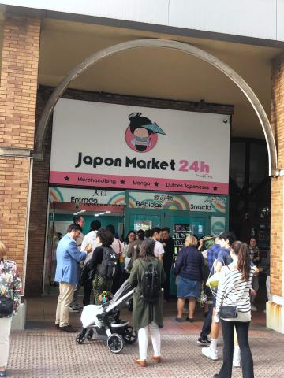
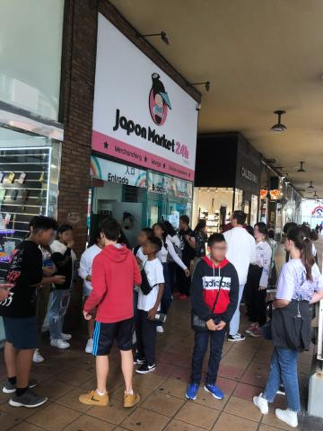
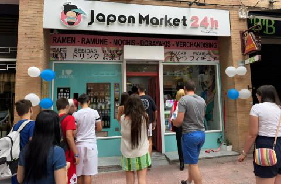
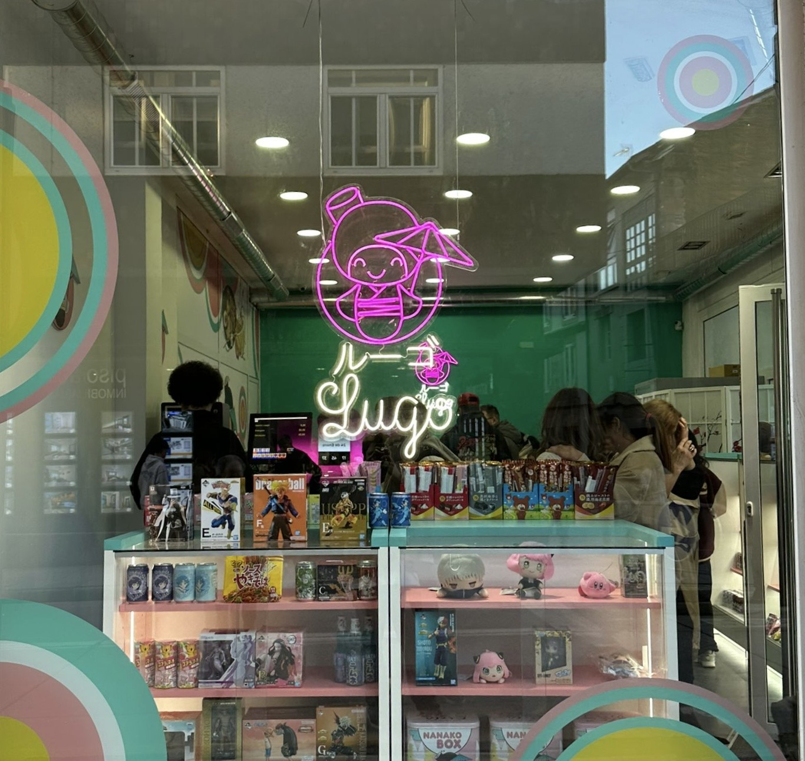
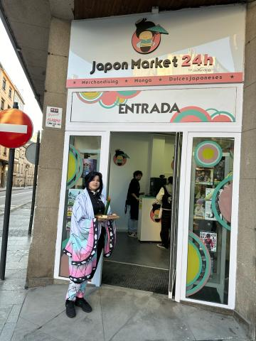
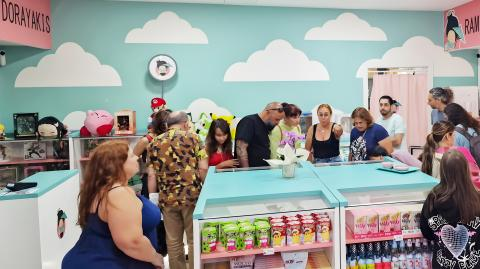
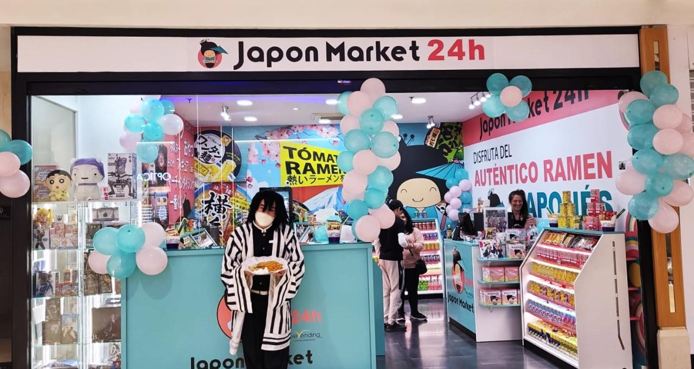
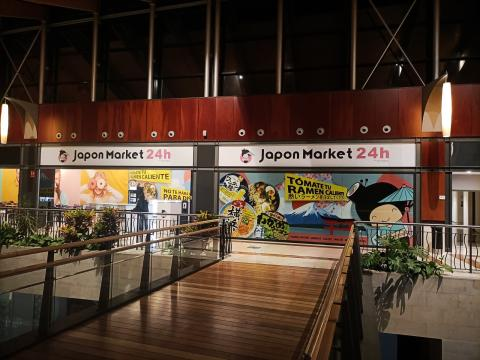
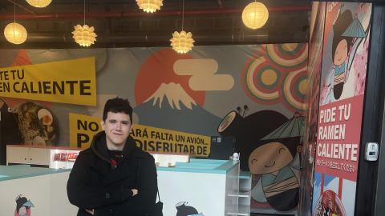

Japon Market 24h
A multidisciplinary role from 2022 to 2024 for a Japanese pop-culture retail brand, connecting store interiors, technical drawings, visual identity, packaging and digital communication.
The challenge
New stores opened in very different buildings, from shopping-centre units to street locations. Each one needed to feel immediately recognisable while responding to its own proportions, light, circulation and relationship with the street or mall.
Avilés store
Colour and signage were designed to remain legible from the shopping-centre circulation before customers reached the entrance.



Móstoles store
A street-level location with a hand-painted mural behind the food counter, turning a practical area into one of the most photographed parts of the store.



Lugo store
A compact street store whose neon window sign gives the shop a strong presence after dark.



My contribution
I worked across interior layouts, technical drawings, 3D visualisation, graphic identity, packaging, editorial material, social media and web content. The role allowed me to connect the physical space with the visual language customers encountered before and after visiting the store.
Las Palmas store
A larger format with room for a full interior mural and a branded delivery van, both developed within the same visual system as the smaller stores.



Tenerife store
A shopping-centre location adapted to the existing unit while keeping the furniture and graphic language consistent with the wider network.


León store
Illuminated wall panels addressed the mall walkway and gave the store a recognisable rhythm without relying on a conventional storefront.



What stayed with me
A brand becomes more believable when the space, packaging and communication feel related without looking copied and pasted. Consistency is not repetition; it is knowing which ideas must remain visible in every format.